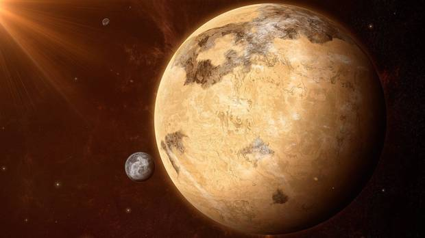

Jessica: Entrenada a la manera Benne Gesserit y madre de Paul
Se desarrollan en un escenario convulso ambientado miles de años en el futuro, en el que la humanidad intenta sobrevivir mientras se expande por todo los rincones del universo. Las grandes distancias entre las colonias y el planeta capital del Imperio han conseguido que las familias funden casas aristocráticas distintas, dirigiendo cada planeta o sistema, y devolviendo a la palestra cierta organización propia del feudalismo. Esto no ha roto los vínculos con el Imperio, dirigido por el Emperador de la Casa Corrino, que intenta sostener un buen número de planetas bajo su mando mientras ata y desata conspiraciones para derrocarle. En el transcurso de estos miles y miles de años, se ha fundado una importante hermandad, las Bene Gesserit, un grupo de mujeres que juega un papel importante en la vida social, religiosa y política en todo el Imperio.
Consejeras y sabias, las Bene Gesserit son sobrehumanas, pues poseen capacidades espirituales y mentales superiores a las del ser humano medio Sus habilidades están muy cotizadas, ya que desempeñan un papel clave en el Imperio, buscando conseguir y concebir, con sus propias artes y artimañas, el Kwisatz Haderach, un sobrehumano masculino que acabe siendo completamente omnisciente y dirigiendo el Imperio de la humanidad en un futuro. Junto a las Bene Gesserit, encontramos a los Mentats. Debido una guerra brutal que sacudió a toda la raza humana hace miles de años, las máquinas inteligentes y todas las inteligencias artificiales se destruyeron 10.000 años antes de los eventos de la primera novela de Dune en la llamada Jihad Butleriana, un conflicto que cambió para siempre nuestra progresión tecnológica. Para evitar rebeliones y peligros para los seres orgánicos, el Imperio reemplazó a los ordenadores y grandes máquinas por los Mentats, unas computadoras humanas capaces de hacer operaciones muy complejas en milisegundos. Pero surgía un problema: las distancias en el espacio son gigantescas, y la comunicación y el viaje entre mundos era vital para mantener el mandato del Emperador de la Casa Corrino y el vínculo entre las distintas casas. Y entonces surgió la especia y Arrakis.
Puntos importantes
Arrakis

El planeta Arrakis
Arrakis es el planeta en el que se desarrolla gran parte de Dune. Hablamos de un sistema lejano, desértico y peligroso, azotado por grandes tormentas de arena y en el que la vida es difícil. El agua es un bien extremadamente preciado y caro, y en las dunas de los desiertos de Arrakis, viven enormes gusanos de arena que aterrorizan a la población indígena, los Fremen. Los nativos del planeta sobreviven en este entorno gracias a los destiltrajes, unos complejos trajes capaces de conservar el agua que el cuerpo humano tiene en su interior, manteniéndolos vivos y frescos, así como hidratados, durante las largas travesías que siguen por los mares de arena de Arrakis. Si bien el Imperio los considera unos fanáticos muy peligrosos, los Fremen mantienen la firme creencia de que un día, un Mesías, llevará a las distintas tribus a la gloria, reclamará Arrakis y traerá el agua con él.
Pese a lo distante, sucio y poco agradable del planeta, Arrakis tiene en su interior el recurso más importante del Imperio: la especia o melange. Sin ella, todo colapsaría en cuestión de horas. La especia tiene una gran variedad de utilidades, y es producida por los Shai-Hulud, los enormes gusanos que cruzan las profundidades del planeta. Considerada durante años como una droga, pues es francamente adictiva, la melange consigue prolongar considerablemente la esperanza de vida de los seres humanos, y en grandes dosis, permite el viaje espacial y el pliegue del mismísimo tiempo. Además, en algunas personas otorga ciertas capacidades premonitorias. El abuso de ella tiene consecuencias fatales como la muerte o la pérdida de cordura, pero en pequeñas dosis es otra forma de sobrevivir en un planeta que intenta matarte a las primeras de cambio. Los Fremen, acostumbrados a ella desde que nacen, tienen los ojos azules por ella. Aunque en partes del Imperio esto se muestra como una forma de indicar la adicción a la sustancia, en Arrakis es una muestra de orgullo. Una medalla que lucir a los forasteros.
En otras palabras: es una sustancia muy valiosa, y quienes controlan el flujo de especia o su producción, controlan la galaxia. Como diría el Barón Vladimir Harkonnen en la novela original: "Quién controla especia, controla el universo". ¿Hay entonces un paralelismo con el petróleo y la explotación de los recursos naturales? Sí, la hay. Frank Herbert concibió esta sustancia como un recursos natural similar al crudo, y parece que esta idea, así como la de la colonización y la extracción indiscriminada estará presente en la nueva adaptación de Dennis Villeneuve.
Paul y la Casa Atreides
El planeta Arrakis
Dune nos cuenta la historia de Paul Atreides (Timothée Chalamet) y la Casa Atreides. No os engañaremos, el argumento que gira entorno a Paul es complejo, y lleno de claroscuros, un elemento que parece se potenciará en la adaptación de Villeneuve. Su arco está ligado íntimamente al destino de Arrakis, y como parte de una dinastía aristocrática y heredero de la Casa Atreides, veremos cómo pasa de los salones del palacio de su padre en el oceánico planeta de Caladan a sobrevivir entre las dunas del sistema desértico del que fluye la especia junto a su familia. Paul es hijo de Duke Leto (Oscar Isaac) y Lady Jessica (Rebecca Ferguson), una pareja de duros pero justos gobernantes que durante años han traído paz a su planeta natal, que ahora comienza a resquebrajarse por tensiones internas. Sin embargo, el Emperador les encomienda una honrosa aunque peligrosa misión: viajar a Arrakis para vigilar y asegurar el tráfico de la melange al Imperio.
Es una persona criada en la comodidad aristocrática que debe buscar su propia identidad en mitad del desierto: la de un forastero en tierra extraña. Junto a Paul tenemos la importancia de Lady Jessica, un personaje que es algo más que la simple concubina de Leto: también es miembro de la Bene Gesserit y entrena a Paul como parte de esta hermandad. Mientras su madre lo entrena en el campo místico, su padre lo lleva a convertirse en un Mentat. Paul es una gran contradicción en sí mismo, que deberá sobreponerse a los males que lo acechan fuera y dentro de palacio. Concebido en contra de las reglas de las Bene Gesserit, la desobediencia de Jessica, una antigua y esperada profecía de tintes mesiánicos, la del advenimiento del Kwisatz Haderach, podría llegar antes de lo esperado y previsto por su orden. Paul está destinado a ser el heredero de su casa, un gobernante justo en Caladan y un líder en una tierra peligrosa para él y su familia como Arrakis.
Grandes gusanos de arena
El planeta Arrakis
Son los grandes protagonistas de Dune. Cuando en 1965 Frank Herbert presentó su novela, muchos los vieron como los monstruos de la historia, pero nada más lejos de la realidad. La idea del escritor no era otra que la de diseñar un universo rico, un ecosistema creíble para su epopeya galáctica. Herbert, amante de la naturaleza, quiso otorgar a estos gusanos gigantes de un gran poder dentro del equilibrio natural de Arrakis. Depredadores, son también parte de la vida, y gracias a ellos, se consigue la especia. Hablamos de unos seres gigantescos, capaces de medir más de 2000 metros de largo, aunque el tamaño varía de una novela a otra y se pueden encontrar otros tantos más pequeños. Los Shai-Hulud son atraídos por las vibraciones de las criaturas más pequeñas que moran en la superficie de los desiertos de Arrakis, por lo que incluso el mero hecho de andar por las dunas es un deporte de riesgo en Dune.
Es por eso que los Atreides y los enviados del Imperio viajan en ornitóptero -esos helicópteros con forma de libélula que se ven en el tráiler-. Los Fremen los esquivan andando de una manera concreta que evita desplazamientos de arena o ruidos, y sus asentamientos se encuentran en territorios rocosos, valles montañosos o elevaciones del terreno. El pueblo indígena de Arrakis los conoce bien, e incluso, los monta como jinetes cuando es necesario para atajar y viajar grandes distancias entre los desiertos del inhóspito planeta.
Letanía Bene Gesserit contra el Miedo
No conoceré el miedo. El miedo mata la mente. El miedo es el pequeño mal que conduce a la destrucción total. Afrontaré mi miedo. Permitiré que pase sobre mí y a través de mí. Y cuando haya pasado, giraré mi ojo interior para escrutar su camino. Allí por donde mi miedo haya pasado ya no quedará nada, sólo estaré yo.